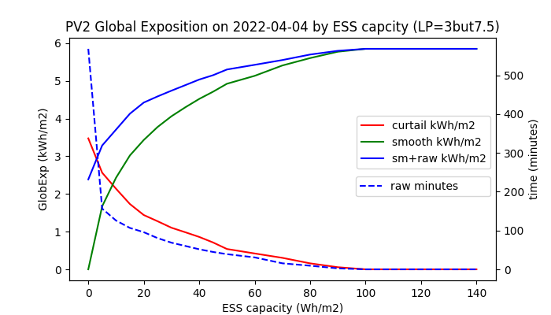
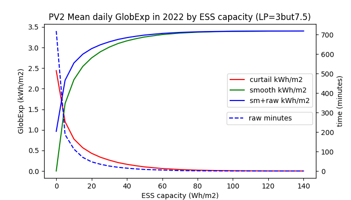

Lossless smoothing of renewable power
The objective is to meet the given ramping limits of RES power while accumulating a minimum of energy by its lossless smoothing. If the smooth power is generated by a low-pass filter (LPF) excited by the renewable power, then such a power filter induces high accumulation costs due to its time lag (group delay in its frequency response). The filter's time lag could be eliminated in theory, if the LPF was excited by a future time course of the RES power. Unfortunately, the time course of RES power is random and its short-time prediction (nowcasting) is not exact and this error considerably increases the energy accumulated by LPF. Recently, various
predictive filters
e.g.
zero group-delay filter
, Kalman filter
have been examined to avoid the accumulation of energy due to the time lag of LPF. These filters seemingly operate as a system, integrating the predictor and LPF into one functional unit potentially accumulating less energy than a standard LPF excited by the predicted RES power. However, they are trained only by a historical information from the measured power signal p(t), lacking additional information e.g. from the sky imagery. As a result, the accumulation costs raised by such filters still exceed the production costs of fossil and nuclear electricity (assuming current social cost of CO2 and nuclear waste).
Our analysis will be focused at first on the application of a
standard LPF excited by a PV predictor
trained by both sky imagery and p(t) signals. We further integrate these two into a single functional entity, exploiting the system benefit of predictive filters whilst maximizing the training information for the power nowcasting.

In the schematic diagram on Figure 1, a PV power plant (PVPP) is connected to the grid and its intermittent power p(t) is accumulated or compensated (smoothed in summary) by an accumulator (ESS). The smoothing power is actuated by a bidirectional inverter AC/DC, and it is determined by the ouput signal p(t)-s(t+Δt) of a subtractor. A positive sign of the smoothing power is oriented from the grid to ESS. Thus a total power superimposed to the grid by PVPP and ESS is determined by the filter’s output signal s(t+Δt). For the simplification, PVPP and ESS are single-phase connected to the grid. Four different power smoothing concepts will be analysed:
-
In case of LPF smoothing, the measured signal p(t) bypasses the predictor, directly exciting LPF.
-
In theory, the ideal predictive smoothing IPLPF excites the LPF by the exact future PV power signal p(t+Δt) where the lead time interval Δt compensates for the time lag of LPF. The smooth power signal s(t+Δt) is a response of LPF to the input signal p(t+Δt).
-
According to the schematic diagram, PLPF smoothing method excites the LPF with a predicted PV power signal pf(t+Δt), approximating the signal p(t+Δt). The predictor is trained by a sky-imagery signal and by the measured PV power p(t).
-
Finally, a smart smoothing method SPLPF has been proposed, integrating the LPF with a PV predictor trained by both measured PV power p(t) and sky-imagery. This method has a modified block diagram.
Energy accumulated by smoothing
For the clarity of analysis, energy losses in the AC/DC power conversion and energy storage will be neglected. The time course of the accumulated energy by ESS
$$SOC(t)=\int_{0}^t (p(\tau)-s(\tau+\Delta t))d\tau\tag{1}\label{eq:1}$$
defines the change in the state-of-charge [Wh] since time 0 until time t, while SOC may acquire both positive and negative values. (Always-positive SOC values in ESS can be technically managed.) The lead time Δt reduces absolute values of the integrated function. The IPLPF-defined signal s(τ+Δt) ensures that following 4 technical criteria are satisfied:
Mean value of SOC is near to zero:
$${1 \over T} \int_{0}^T SOC (t) dt ≈ 0\tag{2}\label{eq:2}$$
Mean quadratic deviation of SOC is near to minimum:
$${1 \over T} \int_{0}^T SOC^2 (t) dt ≈ min\tag{3}\label{eq:3}$$
Hence the required storage capacity per cycle T (24 hours in case of PV power p(t)) is close to the minimum:
$$\Delta SOC = max(SOC) – min(SOC) ≈ min\tag{4}\label{eq:4}$$
Throughput of the accumulated energy per cycle T is near to its minimum:
$${1 \over 2} \int_{0}^T|p(\tau)-s(\tau+\Delta t)|d \tau ≈ min\tag{5}\label{eq:5}$$
The accumulation rate is quantified by \eqref{eq:4} and \eqref{eq:5} and by the demanded power from/to ESS during a sudden loss or a peak of direct sunlight:
$$P_{ESS}=max|p(\tau)-s(\tau+\Delta t)|\tag{6}\label{eq:6}$$
In practise, PEES does not exceed 80% of the installed PV power.
Specific accumulation rate
Let us first discuss a real-time proportionality between the PV power and the global irradiance GI: By definition, GI should be measured at a single point in the plane of incidence. In our experiment, the solar irradiance is intercepted by planar panels of size 20 cm x 16 cm on the earth’s surface. A real PV power p(t) is usually smoother than GI(t), as the (usually greater) surface area of the corresponding PV plane acts like a moving-average filter of GI(t). Unfortunately, the size and speed of clouds prevent of any significant smoothing effect being aggregated by the existing PV surface. By assuming the real-time proportionality between GI(t) and p(t), we analyze the worst case of PV intermittency.
For the sake of general validity of our analysis, we will substitute the signals p(τ), s(τ+Δt) in \eqref{eq:1}, \eqref{eq:5}, \eqref{eq:6} with the measured signal GI(τ) and with its “predicted-and-smoothed” counterpart GIs(τ+Δt). After substitution, the intergal \eqref{eq:1} determines the time course of the specific stored energy GX(t) [Wh/m2] by the filter, whereas SOC(t) is approximately proportional to GX(t). The integral \eqref{eq:5} computes the specific accumulated throughput [Wh/m2] per cycle T.
The measured signal GI(t) and the LPF applied allow for the aggregation of specific ESS parameters requested by the smoothing:
- specific accumulation capacity ΔGX=max(GX)-min(GX) by \eqref{eq:4},
- specific accumulated throughput by \eqref{eq:5}.
- maximum specific power GIESS=max|GI(τ)-GIs(τ+Δt)| by \eqref{eq:6},
These 3 aggregates define the specific accumulation rate of smoothing.
Management of positive SOC
Assume that the prerequisite \eqref{eq:2} holds. Let us split the ESS into 2 accumulators, from which the first one is fully charged and the other one is empty at the beginning of a cycle T. The smoothing power is rectified such that the precharged accumulator is being exclusively discharged whilst the empty one is being exclusively charged by the smoothing, unless the first one is empty or the other one is full. At this moment their roles will be exchanged and so forth until the end of the cycle T. The IPLPF smoothing ensures that \eqref{eq:2} holds so there is a stable balance between charging and discharging the two accumulators throughout the whole cycle T. If microcycling is not harmful to the ESS, then 1 accumulator is sufficient - being precharged to 1/2 of its SOCmax at the beginning of cycle T, assuming that SOCmax > max(SOC) - min(SOC).
Ideal PV smoothing (IPLPF)
The ideal predictive smoothing (IPLPF) is simulated by means of a LPF, ex-post excited by the future signal GI(t+Δt) where GI(t) is measured and the lead time interval Δt eliminates the LPF’s time lag.
Smoothing by IPLPF vs LPF


The graphs on the left show the measured signal GI(t), low-passed GIs(t) (legend “lp”), and left-shifted low-passed GIs(t+Δt) (legend "aavg0") on a day with high solar exposure and strong intermittency. The graphs on the right show the time course of specific energy GX(t) [Wh/m2] accumulated by IPLPF (legend "aavg0") vs GX(t) accumulated by LPF (legend "lp") on the same day. Exactly predicted input signal GI(t+Δt) minimizes the standard deviation of GX(t), in practise minimizing the difference ΔGX = max(GX) – min(GX), thus defining a requirement for the specific accumulation capacity. The specific throughput of the accumulated energy is also minimized by the IPLPF smoothing.
LPF tuning
The time shift Δt is equal to the LPF's group delay τg(f) at frequencies in interval 0<f<<fc where fc is the cut-off frequency of LPF. In case of PV power, Δt is well estimated by τg(0) since the main spectral component of GI is given by day-night cycles providing very low frequencies compared to the random spectral components of GI generated by the atmosphere. The filter's group delay can be tuned by its parameters fc and order. The higher order or the lower fc, the greater Δt and the smoother output power. Technically, Δt expresses the smoothing effect of LPF which in turn determines ramping of the output power. To meet a given ramping limit, various filter orders and fc values can be combined accordingly. The accumulation rate slightly varies within the relevant fc and order combinations. Its minimum is subject to further optimization of these two variables.
Measurement of intermittency
In theory, IPLPF minimizes the storage capacity \eqref{eq:4} and energy throughput \eqref{eq:5} of the lossless power smoothing. Assume now having such a LPF, the output power signal of which complies with the reference power ramping limit. Under such conditions, the specific accumulation rate of IPLPF can be considered as a quantifier of the solar intermittency. This also indicates a potential affordability of PV power smoothing, assuming that a real smoothing technology exists or will exist, performing close to the ideal smoothing. Our numerical experiment based on the measured solar irradiance over a period of >1 year proves that such a SPLPF smoothing already exists. A numeric and graphic comparation of both smoothing methods is shown below.
Cost-benefit by variable ESS
The smoothing costs result from the accumulation technology and from the accumulation rate. The accumulation rate results from the solar intermittency, from the desired ramping of PV power, and from the smoothing method. IPLPF minimizes the necessary ΔSOC and throughput, but cannot squeeze the power of accumulation. Let us first concentrate on a minimum ΔSOC (Wh capacity of ESS) demanded by IPLPF smoothing, regardless of the ESS power needed. The dashed green lines in Figure 2 display the maximum-minimum ΔGX on a given day (96 Wh/m2 on 2022-04-04) and the standard deviation of GX. The maximum-minimum ΔGX specifies the necessary ESS capacity for an uninterrupted IPLPF smoothing on the selected day. Let us now analyze what happens, if less ΔGX capacity is available, than its maximum-minimum request:
 
Following 3 cases will occure during a PV cycle:
1) When the GX values remain within the given ΔGX interval, then IPLPF smoothing works uninterrupted. This holds for all GX values on 2022-04-04, if the specific capacity ΔGX ≥ 96 Wh/m2 as it is shown in Figures 2, 3, and exactly in Table 3.
2) When the GX values exceed the upper limit of ΔGX, then the PV power cannot be stored any more because the ESS is full. The PV power must be either curtailed (by mistuning the MPPT controller), or fed unfiltered to the grid (as the black GI curve in Figure 2). Although the power curtailment means energy losses, the smooth power can still be fed to the grid while the ESS is full. Rather curtail the intermittent PV power than feed it unfiltered to the grid. The red line in Figure 3 shows the lost daily energy as a function in ESS capacity.
3) When GX values pass below the lower limit of ΔGX, then the missing PV power cannot be supplied anymore by the empty ESS. In such a case, there is no choice but to feed the raw low PV power directly to the grid. The blue line shows the sum of "smooth" and "raw" daily energy fed to the grid as a function in ESS capacity, whereas the green line shows only the "smooth portion" of delivered energy. The dashed blue line eventually aggregates the total time interval of day while the raw power was fed to the grid.
Daily mean values aggregated from the whole year 2022 show that ΔGX = 40 Wh/m2 appears to be sufficient in average, although this ESS capacity is less than 1/2 of the maximum-minimum ΔGX needed on 2022-04-04.
The requested power of ESS is aggregated as a maximum absolute difference between the input and filtered power. This is 631 W/m2 on 2022-04-04 (maximum of the year in Table 3) with the LPF time lag Δt = 30 minutes. Hence the relative power of ESS is ≤ (631/40)h-1 = 15.8 h-1. Since this figure is calculated from the measured GI(t), the requested ESS power is slightly lower in a real PV plant because of inherent filtering provided by its surface area. Anyways, such a high relative power cannot be provided by redox accumulators. This power is provided by EDLC supercapacitors, and in theory also by flywheells (FESS) having magnetic bearings.
Although the IPLPF shrinks the necessary capacity and the accumulated throughput to their theoretical minimum, it reciprocally increases the relative smoothing power GIESS/ΔGX, as it is shown in tables 2 and 3. Regardless of its small capacity, the ESS must supply the missing PV power while the direct sun beams are temporarily shadowed by clouds, or vice versa.
If the ESS provides still more power than is needed by IPLPF and the ESS does not generate synthetic inertia together with smoothing, then its specific capacity ΔGX could be decreased even below 40 Wh/m2: Knowing the infeed tariff, price and the service interval of ESS, ΔGX could be optimized by equalizing the cost margins of the lost PV energy and saved ESS capacity. However, accounting for damage caused by the raw PV infeed in 3) is more complex.
Hybrid PV system
Supercapacitors are not cheap and yet there exist hybrid PV systems having inherent LiFePO4 storage providing enough smoothing power. A household with the installed PV power around 10kW is connected to the low-voltage grid, having a LiFePO4 BESS with energy capacity ≈ 2h x installed PV power. The hybrid PV system feeds its excessive PV power to the grid, as long as the household’s consumption is satisfied and the battery is full. If the charging stopps at around 87% SOCmax, then BESS can further provide enough power to smooth the excessive PV infeed to the grid with a relative power 631W/2kWh ≈ 0.32 h-1 on 2022-04-04, provided that the remaining free BESS capacity is reserved for the IPLPF smoothing. In the worst ΔGX case, 96Wh/2kWh = 4.8% of ESS capacity would be reserved for IPLPF on 2022-04-04, though less in average. Additional technical measures have to avoid its microcycling - e.g. a BESS consisting of 2 independent batteries.
PV smoothing costs
Based on the specific accumulation rate measured over a time span of 1+ year, based on the EDLC and LiFePO4 contemporary prices and LiFePO4 lifecycle data, the IPLPF smoothing costs have been calculated. The numeric results show that IPLPF is worthwhile with the German electricity purchase tariff and with the PV feed-in tariff as of 2021. The ideal smoothing costs are substantially lower than the difference between the purchase and PV feed-in tariffs (assuming that the smooth PV infeed partially eliminates the distribution costs).
IPLPF costs based on annual GI data (2022). The plane of incidence and applied LPF match with Figure 2, Tables 2, 3:

Conditions of the cost calculation:
The costs are specific per 1 kW of installed PV power.
1/3 of the anually-generated PV energy by the hybrid PV system is assumed as infeed to the grid.
Microcycling of LiFePO4 ESS is eliminated by technical means.
LiFePO4 life cycle data (expected 6000 cycles) and price 290 €/kWh as of 2025
EDLC price 5000 €/kWh, expected lifetime 15 years, ESS capacity 40 Wh/kW.
Energy losses due to AC/DC conversion and accumulation are neglected.
CapEx = initial investment to the smoothing
OpEx = regular (e.g. yearly) costs of smoothing.
CapEx in a hybrid PV system includes 85% BESS capacity reserved for hybrid storage, 5% for smoothing.
The greater from (CapEx, service_interval * OpEx) defines the cost of IPLPF smoothing for a given service interval.
Having a small part of LiFePO4 BESS capacity reserved but its power available in a hybrid PV system, the IPLPF smoothing costs <5% increase in the BESS capacity. Such a possibility is significant in grid areas with a high concentration of small-scale hybrid PV systems.
EDLC supercapacitors offer a cost-effective IPLPF smoothing to the utility-scale PV plants. Furthemore, the price of EDLC is expected to drop to 1000 €/kWh in the future.
Summary of IPLPF
Long-term continous GI(t) measurement has confirmed that if the PV power smoothing performed close to ideal, it would be affordable either with LiFePO4 or EDLC storage technology applied. The wind power exhibits a similar intermittency like the PV power, but with one exception: Due to a relatively weak influence of daily cycles on wind, the low spectral component of wind power is random. τg(0) is not the optimal lead time here, but Δt has to be dynamically adjusted in order to minimize the requested ESS capacity. While the instantanesous wind power has to be nowcasted, its dominant low spectral component has to be predicted in a longer time horizon.
The low accumulated energy needed by IPLPF should motivate the research of technologies, among which the high-power accumulation of energy, the accurate nowcasting of renewable power, and its smart filtering are key.
In a non-ideal smoothing, the values \eqref{eq:4} and \eqref{eq:5} are larger the less perfectly controlled the balancing of power between the grid and ESS. In the PV smoothing, IPLPF needs between 18% and 20% of ΔSOC relative to LPF, and IPLPF accumulates between 57% and 70% of the energy through ESS relative to LPF (see Tables 2, 3). The trade-off between the smoothing effect and the accumulation rate is especially critical with the PLPF smoothing: The higher Δt, the higher prediction error, and the much higher accumulation rate.
Real PV smoothing (PLPF, SPLPF)
Now, the objective is to analyze the smoothing effect vs. accumulation rate (performance in summary) of PV smoothing in real conditions. The measured global irradiance signal GI(t) allows not only modelling of the ideal predictive low-pass smoothing (IPLPF), but also a simulation of the predictive smoothing of PV power (PLPF) having its LPF excited by a real-predicted signal GIf(t+Δt). The values GIf are distorted by a prediction error. The numeric results will show that this error induces a significant energy accumulation by the PLPF smoothing. We simulated the prediction error into the measured GI values to statistically represent the predicted signal GIf(t+Δt) with the possibility of varying the prediction error. This allowed us to analyze the impact of the prediction error on the PV power smoothing.
In addition to the PLPF, we have developed a “smart predictive" low-pass smoothing method SPLPF, minimizing the accumulated energy \eqref{eq:4}, \eqref{eq:5} with respect to the given ramping limit and real-predicted values GIf. We eventually analyzed the performance of the following smoothing methods:
- LPF: Input of LPF excited by the measured signal GI(t)
- IPLPF: Input of LPF excited by the exact future signal GI(t+Δt)
- PLPF: Input of LPF excited by the simulated-predicted signal GIf(t+Δt)
- SPLPF: Smart power filter excited by the simulated-predicted signal GIf.
OLAP analysis
A multi-dimensional OLAP cube contains pre-aggregated accumulation rates along partial dimensions (a few of independent quantitative or categorical variables), provided that constant smoothing effect meets the given power ramping limit along all dimensions. Let us define the reference smoothing as the output of a 3rd-order Butterworth filter with the cut-off frequency = 7.5/12h (Δt = 30 minutes). Our OLAP cube consists of the following dimensions:
- smoothing method
- LPF order
- smooth_int (prediction error)
- SE (prediction error)
First of all, the constant smoothing effect has to be fixed for various LPF used: Low-pass filters of orders 1 to 4 are tuned to output equal power ramping, provided that each filter is excited by the measured, optimally shifted signal GI(t+Δt). With such a IPLPF tuning, increasing of the LPF order increases its cut-off frequency but only slightly increases its time lag Δt. The next goal is to identify the LPF order which accumulates a minimum of energy, given smoothing method, prediction error, and ramping limit. The same optimal LPF order was identified for the SPLPF as well as for the IPLPF smoothing method. (This is irrelevant for the remaining 2 methods since they accumulate much more energy than IPLPF and SPLPF.) After determining the optimal LPF order, the performance of smoothing methods PLPF and SPLPF was analyzed by a variable prediction error. The numerical results are displayed in tables and graphs, and are explained in text.
Simulation of predicted PV power
The impact of prediction error on GIf values is aggregated at the "future" time t+Δt. The predicted signal GIf(t+Δt) is derived from the measured, left-shifted signal GI(t+Δt) by superimposing a random error to its "future" time course and then by smoothing it with respect to the fundamental properties of PV predictors:
- as the advance Δt increases, the impact of random error on GIf statistically cumulates (increases)
- as the advance Δt increases, the (unwanted) smoothing of the predicted signal GIf strengthens
We specify the prediction error by 2 OLAP dimensions:
- Interval of prediction, after passing of which the smoothing impact on the predicted signal is strengthened, is defined by the parameter smooth_int [minute]. The shorter this interval, the steeper the smoothing effect rises towards predicted future.
- Standard deviation of the random error SE (a dimensionless parameter). A normally distributed random value is superimposed to all "future" GI values. This error is re-generated after passing each 6-minute interval of prediction, and repeatedly superimposed to all remaining future values. The impact of random error on GIf(t+Δt) is statistically cumulated over interval Δt (obviously greater than 6 minutes).
In this report, we simulate the GIf predictors with two different accuracies:
- “Better prediction accuracy”: smooth_int = 6 minutes, SE = 0.05
- "Worse prediction accuracy": smooth_int = 3 minutets, SE = 0.1.
Impact of prediction error
Quality and accumulation rate of the power smoothing exhibit following dependencies on partial dimensions expressing the prediction error (see Figures 2, 6):
Smoothed predicted signal
- Changing of smooth_int affects the smoothing effect neither of SPLPF nor PLPF method, while for all applied values, PLPF performs smoother than SPLPF (Figures 3, 4, 7, 8).
- Lowering of smooth_int dramatically increases the accumulation rate of PLPF, which is always much greater than the accumulation rate of SPLPF (Figures 5, 9). With "worse prediction accuracy", the PLPF method even exceeds the accumulation rate induced by the LPF method (Figure 11). In SPLPF, the accumulation rate increases only slightly and much more slowly than in PLPF.
Random error in predicted values
- Increasing SE has no impact on the smoothing effect of PLPF, but it damages the smoothing of SPLPF (check Figure 9 vs Figure 10). In PLPF, the smoothing effect with SE > 0 is always better than in SPLPF.
- Increasing SE significantly increases the accumulation rate of PLPF (Figures 6, 10), which is for all SE > 0 much higher than the accumulation rate of SPLPF. For some SE values, the PLPF method even exceeds the LPF method in its accumulation rate. The accumulation rate increases only slightly with SPLPF, and less so the higher the filter order (up to order=3).
Analysis by LPF order
The filter order is another OLAP dimension, the impact of which on the smoothing performance was analyzed along with the prediction error. We analyzed the LPF orders 1 to 4 (Figures 10-21):
- Filter order does not affect the smoothing effect of PLPF method, given a non-zero prediction error. For small filter orders, the output of PLPF is smoother than that of SPLPF.
- Increasing the filter order from 1 to 3 notably improves the smoothing effect of SPLPF, given a non-zero prediction error (Figures 10-12, 16-18).
- Given the prediction error, increasing of the filter order only slightly reduces the accumulation rate of PLPF which is always substantially greater than the accumulation rate of SPLPF.
- Increasing of the filter order notably reduces the accumulation rate induced by both IPLPF (zero prediction error) and SPLPF (non-zero prediction error) smoothing methods - see Figures 13-15, 19-21. With the simulated predictor, this trend is reversed between the orders 3 and 4 by the SPLPF method. With the simulated predictor, SPLPF performs best with the filter order 3.
Numerical results of PV smoothing
The presented results are based on the measured GI data from days exhibiting a strong solar intermittency and a moderate to high insolation.
Accumulation rate by method
Specific accumulation rate per date and smoothing method, using the reference filter:


Maximum specific power from/to ESS calculated by \eqref{eq:6} is in the column "GIESS". A difference between the maximum and minimum specific accumulated energy calculated by \eqref{eq:4} is in the column "ΔGX". Daily flow of the specific energy through ESS calculated by \eqref{eq:5} is in the column "Throughput". Daily insolation at the plane of incidence is displayed as "Global exposure".
With "better prediction accuracy" during the selected days, the SPLPF smoothing required a relative ESS power between 5.5h-1 - 7.2h-1 which is 3.8 - 4.8 times more then by the LPF smoothing, 2.4 - 4.2 times more than by PLPF, and eventually 84% - 99% of the IPLPF power request. The SPLPF smoothing required 21% - 22% of the ESS capacity used by the LPF method, or 24% - 41% of the capacity used by PLPF. The SPLPF eventually required 1.0 - 1.2 times the ESS capacity used by IPLPF. The SPLPF smoothing put 58% - 73% of the energy through ESS relative to the LPF method, or 75% - 83% of the energy throughput by PLPF. SPLPF eventually put 1.0 - 1.1 times more energy through ESS than the IPLPF method.
With "worse prediction accuracy" during the selected days, the SPLPF smoothing required a relative ESS power between 3.8h-1 - 6.3h-1 which is 2.6 - 4.2 times more then by the LPF smoothing, 3.6 - 5.1 times more than by PLPF, and eventually 58% - 86% of the IPLPF power request. The SPLPF smoothing required 24% - 33% of the ESS capacity used by the LPF method, or 19% - 28% of the capacity used by PLPF. The SPLPF eventually required 1.2 - 1.8 times the ESS capacity used by IPLPF. The SPLPF smoothing put 59% - 77% of the energy through ESS relative to the LPF method, or 63% - 69% of the energy throughput by PLPF. SPLPF eventually put 1.0 - 1.1 times more energy through ESS than the IPLPF method.
SPLPF vs IPLPF
Although we did not analyze the whole year (the numerical simulation of SPLPF is computationally intensive), our analysis of 4 smoothing methods on the selected days with high solar intermittency and various solar exposures, with 4 filter orders, and with a varrying prediction error provides a detailed insight into the SPLPF performance. This smoothing method performs much better than the PLPF. With a moderate prediction error, SPLPF performs close to the ideal smoothing IPLPF. The presented empirical results are theoretically proven in the chapter SPLPF Smoothing.
PV smoothing graphs
The following graphs show the smoothing effect and accumulated energy depending on the smoothing method and other OLAP dimensions. The measured data on 2 selected days (medium vs. high insolation, both strong intermittency) have been processed into following time series:
- Measured GI(t), synchronized with predicted GIf (1 hour zoomed) - Figures 4, 8
- Measured GI(t) and its smooth counterpart by the prediction accuracy, comparing all smoothing methods, having optimal LPF order applied - Figures 5, 6, 9, 10
- Accumulated GX(t) by the prediction accuracy, comparing all smoothing methods, having optimal LPF order applied - Figures 7, 11
- Smooth GI(t) by the filter order and prediction accuracy, comparing IPLPF and SPLPF smoothing methods - Figures 12-14, 18-20
- Accumulated GX(t) by the filter order and prediction accuracy, comparing IPLPF and SPLPF smoothing methods - Figures 15-17, 21-23
Analysis by prediction error
A day with medium insolation


A day with high insolation


Analysis by LPF order
Following graphs compare the smoothing by IPLPF vs SPLPF method:
A day with medium insolation


.
A day with high insolation